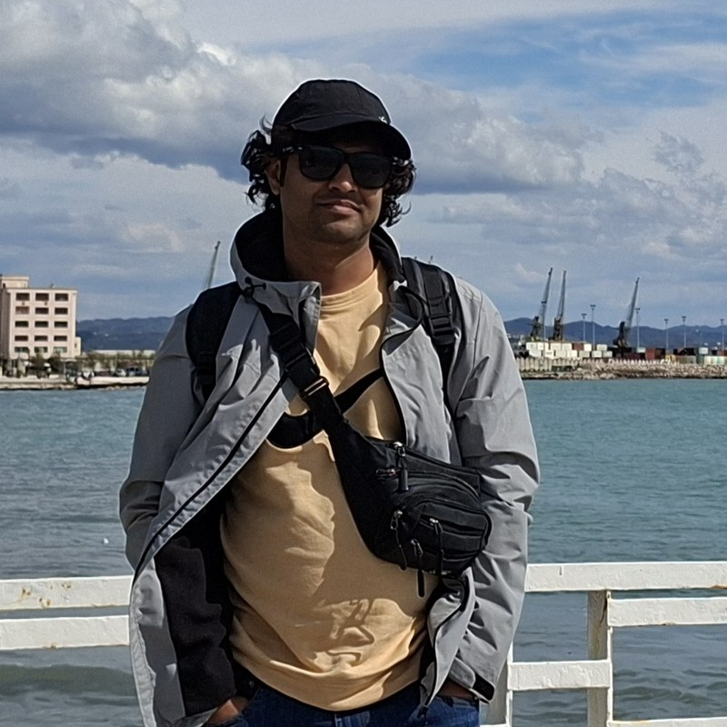
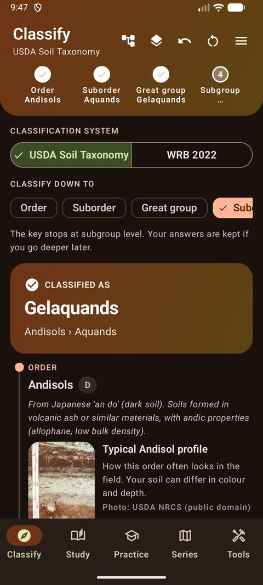
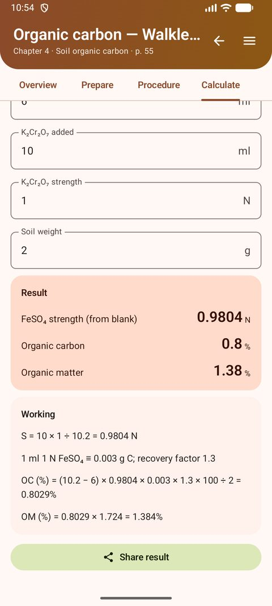
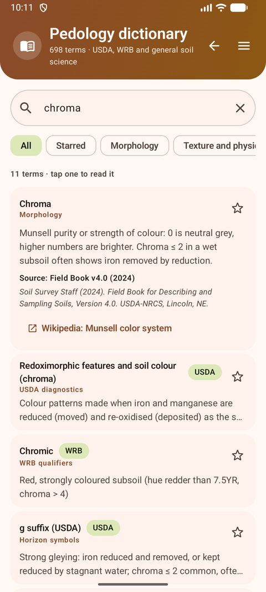

Md Kamruzzaman
Soil scientist · MSc Soil Science (BAU) · MSc Ecotoxicology (MATE, ongoing)
Designed and built the app: classification keys, Bangladesh series, dictionary and the interactive lab manual.
Android app · version 1.0
Learn and classify soils with USDA Soil Taxonomy and WRB 2022 — down to family and the Bangladesh soil series — with a pedology dictionary and the Soil Chemistry Laboratory Manual built in. Free, works offline.
Download TaxoSoil (APK, 2.6 MB)


TaxoSoil-1.0.apk.